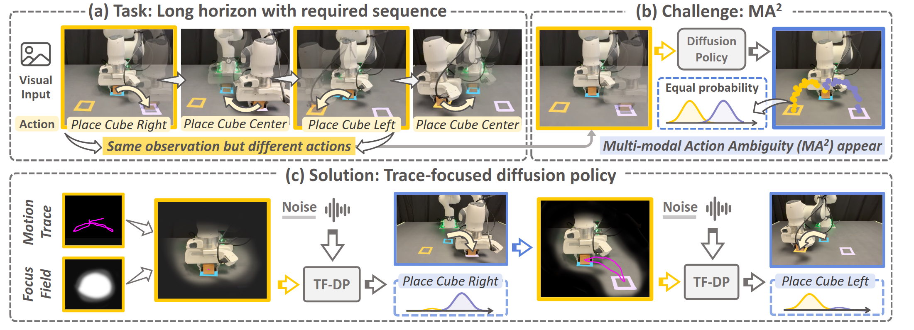
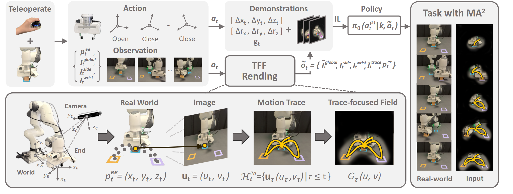
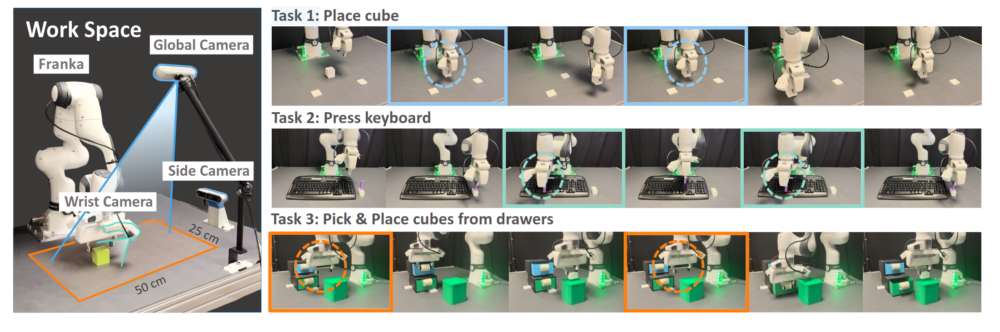
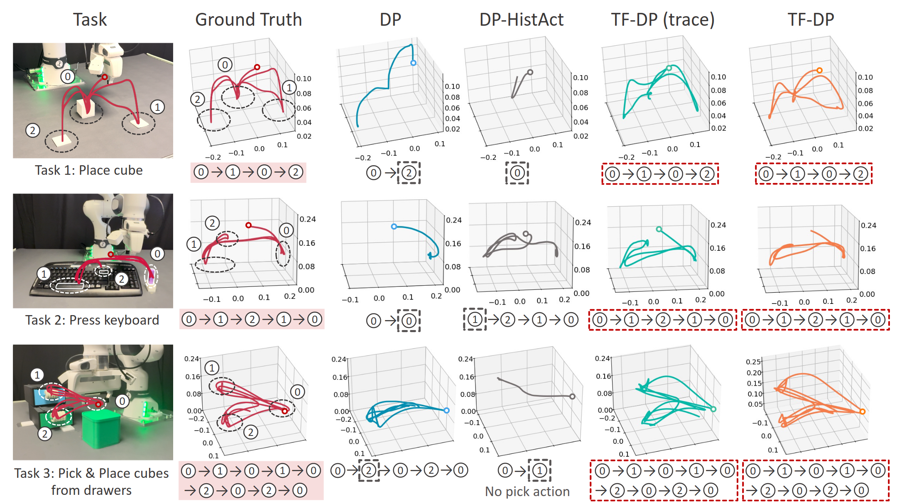
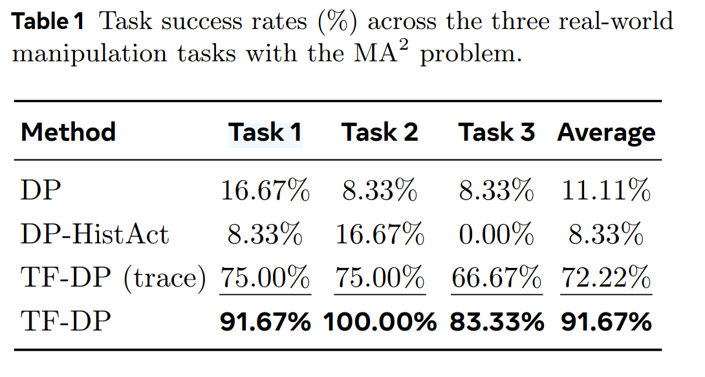
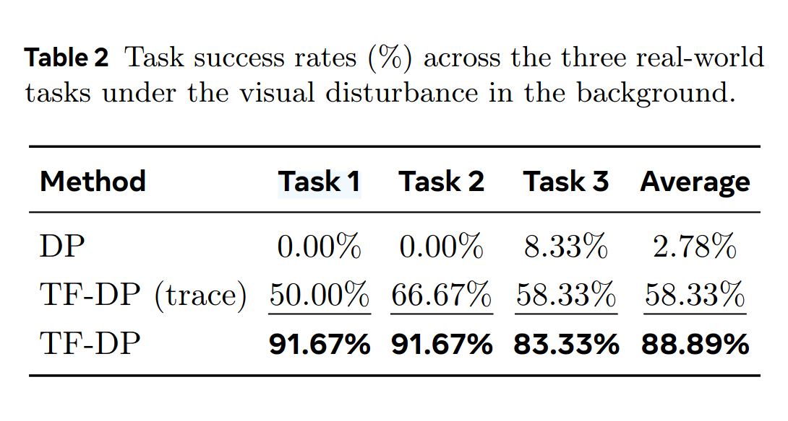

Generative model-based policies have shown strong performance in imitation-based robotic manipulation by learning action distributions from demonstrations. However, in long-horizon tasks, visually similar observations often recur across execution stages while requiring distinct actions, which leads to ambiguous predictions when policies are conditioned only on instantaneous observations, termed as multi-modal action ambiguity (MA2). To address this challenge, we propose the Trace-Focused Diffusion Policy (TF-DP), a diffusion-based framework that explicitly conditions action generation on the robot’s execution history. TF-DP represents historical motion as an explicit execution trace and projects it into the visual observation space, providing stage-aware context when current observations alone are insufficient. In addition, the induced trace-focused field emphasizes task-relevant regions associated with historical motion, improving robustness to background visual disturbances. We evaluate TF-DP on real-world robotic manipulation tasks exhibiting pronounced multi-modal action ambiguity and visually cluttered conditions. Experimental results show that TF-DP improves temporal consistency and robustness, outperforming the vanilla diffusion policy by 80.56% on tasks with multi-modal action ambiguity and by 86.11% under visual disturbances, while maintaining inference efficiency with only a 6.4% runtime increase.
Long-horizon manipulation requires a single policy to execute temporally consistent action sequences. Diffusion policies conditioned only on instantaneous observations can produce ambiguous actions when visually similar states reappear at different execution stages.
This one-to-many mapping creates multi-modal action ambiguity (MA2), causing unstable action sampling and incorrect ordering that compounds over time, especially under visual disturbances.
TF-DP resolves MA2 by integrating execution traces into the policy, enabling the model to distinguish stages and act consistently within a single reactive policy.
We propose TF-DP, a trace-focused diffusion policy for long-horizon robotic manipulation under multi-modal action ambiguity.
TF-DP aggregates historical robot motions into a compact execution trace, projects it into the current visual observation, and computes a trace-focused field that emphasizes task-relevant regions associated with past motion. The diffusion policy then conditions action generation on both the current observation and the trace cues, producing stage-aware, temporally consistent actions.
Concretely, TF-DP takes multi-view observations (global, side, wrist) and end-effector state, projects historical 3D end-effector positions into the global image, and renders a dense trace-focused field over the projected trajectory. This execution-aware observation guides the denoising process to resolve ambiguity when visually similar states recur.

Compared to diffusion policies conditioned only on instantaneous observations, TF-DP explicitly encodes execution history, resolving MA2 within a single reactive policy without relying on hierarchical planners or external high-level reasoning.
During training, trace-focused fields are rendered from full demonstration trajectories; during inference, the trace is updated online step-by-step, enabling closed-loop execution without changing the base policy architecture.

We compare TF-DP against diffusion policy baselines, including history-conditioned variants, to test whether execution traces resolve MA2 and improve robustness under visual disturbances. TF-DP consistently recovers the correct action order in long-horizon execution and remains stable under cluttered scenes.
Experimental setup: a Franka Research 3 arm is observed by three RGB-D cameras (global overhead, side view, wrist). We evaluate three long-horizon tasks—place cube, press keyboard, and pick & place cubes from drawers—designed to contain visually similar states that require different actions.

TF-DP produces temporally consistent trajectories by conditioning on execution traces, while baselines often switch to incorrect action stages under visually similar observations.
TF-DP remains stable under cluttered and visually disturbed scenes by leveraging trace-focused fields that emphasize task-relevant regions.
Each row compares the same manipulation task under two settings: the original scenario and a visually disturbed background. TF-DP maintains stable execution despite clutter and appearance shifts, while preserving task-relevant action sequences.
TF-DP is evaluated on real-world robotic manipulation tasks that exhibit pronounced MA2 and visually cluttered conditions. Compared to the vanilla diffusion policy, TF-DP improves success by 80.56% on tasks with MA2 and by 86.11% under visual disturbances, while adding only 6.4% runtime overhead.


@misc{tfdp2026,
title={Trace-Focused Diffusion Policy for Multi-Modal Action Disambiguation in Long-Horizon Robotic Manipulation},
author={Author Names},
year={2026},
note={under review},
}